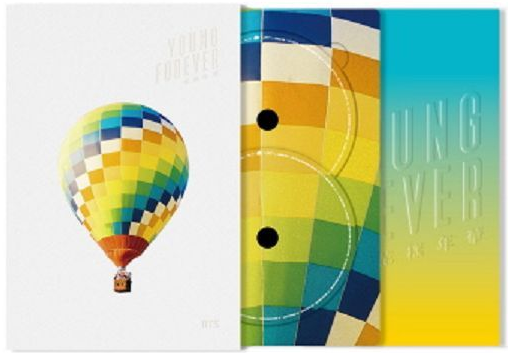
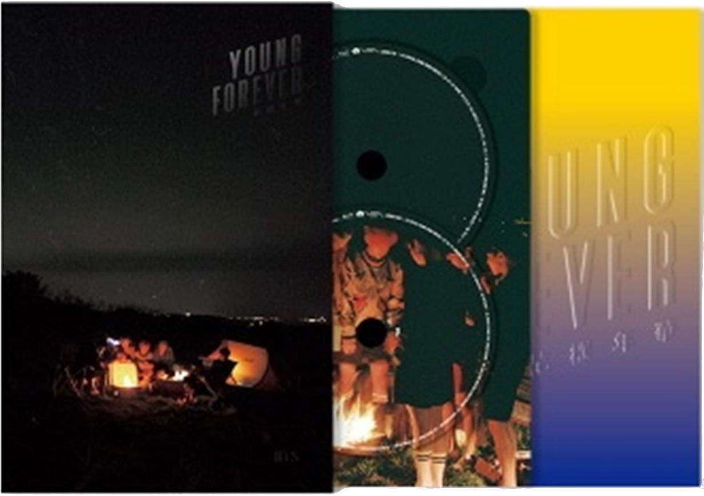

Young Forever est La deuxième compilation des BTS, celle-ci constinuant la troisième et dernière partie de leurs trilogie The Most Beautiful Moment in Life. Sortit le sous le label de Big Hit Entertainment, cette compilation contient les titres de leurs deux mini albums de 2015: The Most Beautiful Moment in Life, part 1 et The Most Beautiful Moment in Life, part 2. Cet album, contenant deux cd et un photobook de 112 pages, est composé de 17 chansons répartis sur les deux CD. La durée totale des CD de cet album est de 88 min et 38 s. Cet album est disponible en deux versions: day et night. Les chansons disponibles sur cet album ne varient pas selon la version, seul le disign et le photobook disponible dans Young Forever changent.
 Cette chanson, écrite par Slow Rabbit et Suga, est interprétée par Suga.Ce dernier ayant également réalisé un clip vidéo de cette chanson.
Dans cette introduction, Suga partage son expérience passé, celle d'un garçon, seul, qui a peur du monde et qui se débarasse petit à petit du désespoir en trouvant un but dans sa vie, un rêve à atteindre. Durant toute la chanson composé d'un rap posé et calme, Suga se bat contre deux états: celui du desespoir et de la résistance.
Cette chanson, écrite par Pdogg, Rap Monster, Bang Sihyuk et Brother Su, est interprétée par le groupe bts au complet. Cette chanson possède un clip vidéo.
Malgré la mélodie plutôt joyeuse de cette musique, celle-ci, I need U est une musique parlant de dépression. Le clip contient des scènes sombres et violentes qui peuvent démontré de la forte agressivité de cette maladie. Malgré son faible budjet, la chanson est visuellement très réussit et à permis au groupe de booster leurs carrière.
Cette chanson, écrite par Slow Rabbit, Pdogg, V, J-Hope, Suga et Rap Monster, est interprétée par le groupe BTS au complet. Cette chanson ne possède pas de clip vidéo.
Sur un ton doux et appaisant, les membres des BTS parlent au travers de cette chanson d'un homme seul suite à une rupture amoureuse, essayant de tout mettre en oeuvre pour pouvoir tourner la page sur son ancienne relation.
Cette chanson, écrite par Suga, Slow Rabbit, Jungkook, "Hitman" Bang, Rap Monster, J-Hope et Pdogg, est interprétée par le groupe BTS au complet. Elle ne possège pas de clip vidéo.
Dead Leaves exprime la vision de ce que signifie "grandir" pour le groupe. Quitter le jeunesse signifie, pour eux, se rendre compte qu'on a fait des chose qui paraissent stupide une fois loin derrière nous mais au fond, l'envie de rester jeune de disparait jamais totalement.
Cette chanson, écrite par Slow Rabbit, "Hitman Bang, Pdogg et Brother Su, est interprétée par le groupe BTS au complet. Elle ne possèse pas de clip vidéo.
Inspirée de The Butterfly Dream de Zhuang Zhou, Butterfly compare le rêve fragile et éphémère à un papillon. La chanson entière invoque un état dans lequel la frontière entre le rêve et la réalité n'existe pas.
Cette chanson, écrite par Pdogg, "Hitman" Bang, V, Rap Monster, J-Hope, Jungkook et Suga, est interprétée par le groupe BTS au complet. Elle possède un clip vidéo.
A travers cette chanson, les BTS tentent de réconforter les gens qui les écoutes. Tout le monde peut faire des erreurs mais il faut savoir les assumer et continuer à avancer plutôt que deles fuirs. C'est également cette idée qui à valu son titre à la chanson.
Cette chanson, écrite par Pdogg, "Hitman" Bang, Rap Monster, J-Hope et Suga, est interprétée par le groupe BTS au complet. Elle ne possède pas de clip vidéo.
BTS est connu pour produire des chansons qui traitent de certains problèmes de sociétés. Ma city fait partie de ce type de chanson. Elle est cependant assez particulière car, contrairement à beaucoup de chansons des BTS traitant de problèmes de sociétés qui s'applique à la plupart des sociétés actuelles, Ma City dénonce les méfaits d'un groupe de cyberterrorisme nommé Ilbe, propre à la Corée du Sud.
Cette chanson, écrite par Pdogg, Slow Rabbit, Supreme Boi et Rap Monster, est interprétée par le groupe BTS au complet. Elle ne possède pas de clip vidéo.
Une fois de plus, Silver Spoon est une chanson à travers laquelle les BTS dénoncent un problème de société. Dans celle-ci, le groupe se moque des personnes étant nés dans un famille riche, qui ne font aucun effort pour obtenir ce qu'ils veulent. Le titre de la chanson est inspiré de l'expression occidentale "être né avec une cuillère d'argent dans la bouche".
Cette chanson, écrite par Pdogg, J-Hope, "Hitman" Bang, Rap Monster et Suga, est interprétée par Jin. Elle possède un clip vidéo.
A travers cette chanson dynamique et entrainante, les BTS dénoncent les problèmes que rencontre les jeunes diplômés pour trouver du travail. Le chômage est en effet très élevé chez les jeunes en Corée et beaucoup pensent à quitter le pays dans le but de trouver du travail.
Cette chanson, écrite par Pdogg, "Hitman" Bang Rap Monster, Suga et J-Hope, est interprétée par le groupe BTS au complet. Elle possède un clip vidéo.
Sur une musique entrainante et un rythme déchainé, Fire nous encourage à vivre une vie sans souci et pleine de joie. Il ne faut pas penser au passé mais se concentré sur l'avenir qui est devant nous.
Cette chanson, écrite par Ray Michael Djan Jr., Ashton Foster, Samantha Harper, Rap Monster, J-Hope et Suga, est interprétée par les rappeur du groupe. Elle ne possède pas de clip vidéo
Save me est une chanson qui exprime essentiellement ce que ressent une personne ayant des envies de suicides. En effet, losqu'une personne est suicidaire, il n'est pas rare qu'elle manifeste des signes de détresse, même si ce n'est pas toujours directement. Etant donné qu'ils pensent d"ranger les gens s'ils leurs demande de l'aide et qu'ils ne veulent pas posé de problèmes, leurs appels à l'aide sont très souvent subtil et ils espèrent que quelqu'un les remarques. Save me exprime ainsi cet appel à l'aide, sur une musique à la fois calme, dynamique et envoutante.
Cette Chanson, écrite par Rap Monster, Slow Rabbit, Pdogg, Suga et J-Hope, est interprétée par le groupe BTS au complet. Elle ne possède pas de clip vidéo
Converse High est une chanson inspirée de l'idéal féminin de Rap Monster. La musique est calme et apaisante. Cette chanson sert principalement de transitions entre les deux CD de l'album.
Cette chanson, écrite par Pdogg, Suga, J-Hope et Rap Monster, est interprétée par le groupe bts au complet. Elle ne possède pas de clip vidéo
Sur une mélodie extrêmement posé et calme, les BTS racontent dans cette chanson la vie qu'ils avaient à leurs début. En effet, leurs début ont été difficiles, ils vivaient tous dans une petite pièce et partageaient temps, nourritures et parfois même vêtements ensemble. Bien que cela ne soit plus le cas aujourd'hui, ils ont décidé de réalisé cette chanson en mémoire de cette époque.
Cette Chanson, écrite par Slow Rabbit, Pdogg, "hitman" Bang, Brother Su, Rap Monster, J-Hope et Suga, est interprétée par le groupe bts au complet. Elle ne possède pas de clip vidéo
Le nom Whalien 52 fait référence à une baleine (whale en anglais) surnommé 52 Herz par les scientifiques à cause de la basse fréquence des sons qu'elle émet. Etant donné la trop basse fréquence de ces appels, inaudible par les autres baleines, celle-ci est rejeté par ces congénère et est contrainte à la solitude. Whalien 52 utilise cette baleine étudier par les scientifiques afin d'exprimer les ressentits d'une personne rejeté par les autres.
Cette Chanson, écrite par Slow Rabbit et Brother Su, est interprétée par les chanteurs du groupe. Elle ne possède pas de clip vidéo.
House of Cards est une musique sensuelle à caractère ambiguë. On retrouve cette idée d'ambiguité dans le genre même de la musique. En effet, la musqiue est situé entre le pop et le jazz, sans pour autant être complètement l'un ou l'autre. Le mélange de ces deux genres musicaux était un grand risque, mais le résultat n'en est que plus réussit.
Cette Chanson, écrite par Slow Rabbit, PdoggJungkook, Jin et V, est interprétée par le groupe bts au complet. Elle ne possède pas de clip vidéo.
Love is not over est une chanson très calme qui parle des difficultés, des luttes et de la douleur que l'on peut ressentir en voulant aimer quelqu'un qui est éloigner, comme une relation à distance.
Cette Chanson, écrite par Slow Rabbit, "Hitman" Bang, Rap Monster, Suga et J-Hope est interprétée par le groupe bts au complet. Elle possède un clip vidéo.
La jeunesse est courte et éphémère mais elle est tout de même considèré par beaucoup de personne comme la meilleur période de leurs vie. Dans cette chanson servant de conclusion à leur album, les BTS comparent leur carrière à la jeunesse. Ils sont bien conscients de l'impermanence de la célébrité mais tentent tout de même de profité autant qu'ils le peuvent de ces moments. La chanson est donc à la fois triste et pleinne d'espoir.
| rôle dans la création de l'album | noms | nom du studio |
|---|---|---|
| ingénieur d'enregistrement | Pdogg | Dogg Bounce |
| Slow Rabbit | Carrot Express | |
| Yang Ga | Big Hit Studio | |
| RM | Mon Studio | |
| Suga | Genius Lab | |
| J-hope | Hope World | |
| Docskim | Hoodcave | |
| adora | Adorable Trap | |
| ingénieur de masterisation | Alex Deyoung | deyoung master |
| producteur exécutif | "hitman" bang | aucun |
| superviseur exécutif | Nine Choi | |
| directeur en chef de la gestion | Kim Sin-Kyu | |
| équipe de gestion | Song Ho-Peom, Kim Sae-Jin, Lee Sung-Seok, Lee Jung-eel, Kim Yoon-Jae, Park Soon-Hak, Oh Gwang-Taek | |
| directeur en chef de la production et du commerce | Lenzo Yoon | |
| équipe commerciale | Park Woo-Jung, Kim soo-lin, In Na-yeob, Kil Hyeon-Jee, Kim Boon-hong | |
| équipe de négociation des partenariats | Dre Park, Gang Gyeong-Jin, Bae Song-ho, Sin Hyo-Jin | |
| directeur en chef de la communication | Chae eun | |
| communication avec le publique | Kang Seol-Heui | |
| Directeur en chef du comerce à l'échelle mondiale | Lee Hyeok | |
| équipe chargée des finances | Gweon Eun-Sang, | |
| Producteur | Pdogg | |
| Co-producteur | "hitman" bang | |
| directeur de la création visuelle | Kim Song-Hyeon | |
| équipe de création visuelle | Lee Hyeon-Joo, Lee Seon-Gyeong | |
| Directeur des prestations | Son Seong-Deuk | |
| Prestations | Lee Ga-Heon | |
| Photo | Kim Hyeong-Sin | |
| MV | Lumpens, GDW | |
| Distribution | Loen | |
| art work | Overmind | |
| impression | JS company | |
| chanteurs, danseurs | Jungkook, Jimin, V, J-Hope, Suga, RM, Jin |
album physique